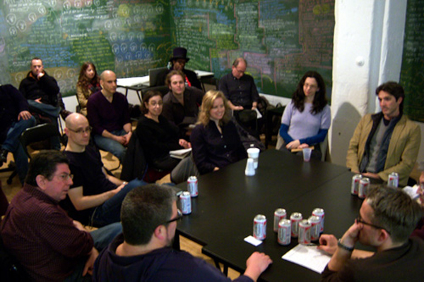
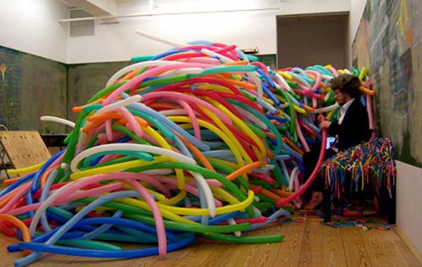

-
Art, #class: Interview with William Powhida and Jennifer Dalton
by Idiom July 13, 2010
Earlier this year, William Powhida and Jennifer Dalton organized #class at Winkleman Gallery, a show dedicated to exploring the way that issues of money and privilege impact contemporary art. Idiom colluded with both artists over email to discuss the show, rich people, and Bravo’s foray into our collective sandbox.
Stephen Squibb: Can you fill in the background of #class for those who might not be familiar?
William Powhida: After my experience in Miami doing an interview with Damien Cave for the New York Times and the fall out over my drawing How the New Museum Committed Suicide with Banality I felt like I was short on answers for what was most troubling about the art market. In fact, there seemed to be so many facets to the problem that it was even hard to clearly articulate what the problem was. By late November I was involved in a number of discussions about the issues the New Museum situation presented and the critiques I’ve been raising in my work for the last few years.
Right around Christmas, Jen Dalton called me and asked if I’d be interested in collaborating on an exhibition around the notion of ‘alternatives/reforms’ for the art market at Winkleman Gallery. I think in some respects, Ed saw an opportunity to get us to work together after all the press that had come out around the New Museum controversy. Jen was also mentioned in the New York Times profile for our previous collaboration. Initially, I wanted to do something antithetical to a commercial gallery show. Jen was interested in something radical, she was very much into the concept of art as a ‘gift’ – she had read The Gift and felt there was something to be explored there.
After some early ideas that involved expelling Ed and the staff from the gallery or making a purely social space and the ensuing arguments with Ed, we all began to realize that we still had a hard time pinning down exactly what the problem(s) were that we needed to address. After several cocktails at the Tribeca Grand, we arrived at our basic problem statement about art being a luxury commodity (it’s on the blog). The heated discussion that brought us there was so lively and engaging even to one of Ed’s friends outside the commercial gallery world, the discussion seemed to be worthy of a show. Quickly, Jen and I arrived at the chalkboards, primarily to facilitate and inspire discussion but also to make sure it wouldn’t become an open call for art.
We worked out the think/work/market spaces to address many of the conditions we wanted to call into question. Jen’s early motto was ‘this is not that’ so anything we thought of, we then tried to invert or alter in some way to heighten awareness about the forms we were dealing with, whether it was making panel discussions informal or selling work in a best offer scenario. We didn’t curate the events, mainly suggested topics and took the first proposals that came in and the order they came in.
Then, #class actually happened and now we are exhausted.
Jennifer Dalton: Both William and I have a history of making artwork that examines, analyzes and critiques aspects of art, the art market and the art world. Very often when you critique something you get asked to offer solutions, which is only fair. This happened to me a few years back after I made a series of works exposing extreme gender inequalities in the art world and recently happened with William after he so beautifully illustrated the New Museum controversy. In late December, when Ed Winkleman invited us to do a show on alternatives/solutions to the current commercial art market system, we had a series of meetings and realized we had no solutions and even had a hard time defining the problems. The word we kept coming up with was a “queasiness” that we felt in participating in the market system. But we had trouble explaining where that queasiness came from and why we felt it. So we decided to invite anyone and everyone to pitch in in defining the problems and proposing solutions. To that end, as William said, we put out an open call via Twitter, Facebook, blogs, and email for events, discussions and performances addressing art and the current art market and accepted every semi-relevant proposal that came in until we ran out of time during the show.
SS: Talk about the name of the show. Its somewhat self-explanatory for many, but maybe not for others…
JD: I’m not sure the name of the show was a good decision, since I had to explain it dozens of times to many people throughout the show, and it was routinely butchered right up until the end, even by participants. But it was inspired by the practice on Twitter of using the # sign (pronounced “hashtag”) to mark a subject so that people can follow posts on that topic, the same way you can follow posts by certain people. Using this tag referenced the “crowdsourcing” aspect of our show, and that it was open to anyone who wanted to participate. And of course “class” has multiple meanings, all of which we felt were appropriate: we liked the the pedagogic aspect of “class” as being somewhere you learn and teach, and of course we also liked the word “class” in the sense of economic and social hierarchies we were trying to explicate and break down.
WP: Jen and I went back and forth with titles for the show, but I think we settled on class first and added the hashtag because we wanted to encourage participation. I was responding to the way the # was used to cover the Iranian protests during the disputed election. I thought it was an interesting addition that as Jen described probably didn’t translate the broader public. We may have had to explain what the hell the # was, but I think that’s part of the educational nature of the show. The best part of using #class was the twitter feed that brought a huge range of tweets about class into our rather specific discussion. Things like “that bitch needs to get some #class” would pop up in our feed, which was both funny and real.
SS: Let’s talk more about this undefined queasiness directed at the market mechanism. I think its a feeling shared by many. Did you come out of #class with that feeling sharpened or clarified at all??
WP: The collector panel and the collector focus group, organized by Jen and Kevin McCoy, both served to temper my queasiness participating in the market because we were able to hear the real interests of collectors. What was different from meeting someone who has bought my work was that it didn’t involve a transaction. Listening to the motivations of collectors was really fascinating and allowed me to understand something of their motivations. I don’t think it cured my unease with the market mechanism, but it helped to defuse my cynicism.
Also, the early discussion “The system works” led by artist Ivin Ballen was really interesting because Ivin argued that despite the flaws we are heavily invested in the market mechanism. Through the entire process of #class, Ed repeatedly demonstrated how the market can work to support artists and made his role very transparent. I think my respect for him, and dealers in general, grew markedly, in part because he understands the limitations of the market but also because he tries to support the most interesting work he can within it.
I think #class was empowering in that within some aspect of the market, we were able to present an alternative to ‘business as usual’ and capture an unprecedented amount of attention and interest. It wasn’t something that was ignored as an anomaly, but well-covered and disseminated through social media and more traditional outlets. Nor was it simply absorbed into the market mechanism, instead it provoked more questions. For me, this was the beginning of a dialogue that might help address some of the uneasiness about participating in a star-system and provoke an authentic reflection on the ways in which we, all of us, generate value around art objects. I’m left with the feeling that the market mechanism is bent, but not broken and that we have some collective authority to re-shape it in a more equitable manner. Really, we want to find ways to elevate the importance of culture in our shared social life. That art is a privilege for the wealthy, and not a right for everyone to understand and appreciate about our shared humanity is a concept that we really did challenge. Comically, we came to the conclusion that ‘art needs to make friends’ and perhaps shed art’s aura of autonomy from society. As artists, if we feel uneasy with selling work, I think it’s because we feel uneasy being so isolated from other social interests and dependent on 1% of society. I want to say that through #class I learned that making art isn’t enough, that there is a shared responsibility to get involved with sympathetic causes in a material way so that when we as artists ask for support, we will have earned the respect of others outside the market mechanism. I think that any uneasiness we feel about selling work would be seriously mitigated if we were working in concert as activists to promote a society that respects and appreciates our work. It might lessen the ‘me first’ feeling of making art in relative isolation, and in some privileged cases, seriously profiting from that labor.
JD: I agree, the queasiness does seem to be shared by many other people around art, whether they are artists or not, which is why we wanted to explore it. #Class helped me see that, at least for myself, the queasiness seems to be caused by some unresolvable contradictions: We feel that art should be a gift, but we don’t want to work for free. We want recognition for our work, but we may be uncomfortable with personal attention. We want to sell work for a price that many can afford, but we can’t afford to sell it for less than it costs us to make, so we therefore can’t sell art to people like ourselves. We want more types of people to participate in art, but we might not appreciate their taste.
There may not be any solutions to these paradoxes, but it was helpful for me to recognize them because it explained why one might feel queasy in the art business. But perhaps we can make peace with having to feel these contradictory emotions all at once.
It was the conversations, more than the performances and events, that helped me come to this. Having such open discussions with so many people who are all interested in more or less the same things, but who mostly did not know each other, was incredible.
SS: Ok, let’s talk about those collectors. What are their motivations? What did they say that changed the way you thought about what they do?
JD: Artists often voice suspicions that collectors have ulterior motives for buying art: that they buy more out of speculative investment than out of passion, and/or that they seek to elevate their status through the purchase of luxury goods. This of course is probably true in some cases. But the only motivation expressed by collectors who participated in #Class was that they really, really like art. When I listened to them speak, they sounded like artists who just didn’t happen to make art. They like being around art just as much as we do and they try to surround themselves with it.
Having a varied group of collectors speak also dispelled the idea that they all have a lot of money. Many of them are primarily collecting relatively inexpensive work with modest means and choose to buy art over many other creature comforts.
WP: I think first, I’d like to express my appreciation for the collectors who participated. That said, I think we only had one collector, Jen can help with the name here, Newman I think, who has been able to afford both Modern and contemporary art. The collectors on the panel all expressed their deep personal connection with the art they bought and their passion for collecting art. Lacking a mega-collector, well Jen’s guest collector wished to remain anonymous and attempted to participate by phone briefly, we weren’t really able to address the drastic class differences between collectors and artists. I think Mr. Newman, was the closest thing we had to a megarich collector. I think the discussion would have benefited greatly from hearing from someone who collects Jeff Koons or Damien Hirst to challenge our assertion that art is a luxury commodity.
Despite the lack of a megacollector, one of the most sensitive issues for the collectors on the panel was their estates. For the most part, they all seemed concerned with what is going to happen to their collections. For Mr. Newman, I don’t think this will be a problem, a museum will most likely take it all for the treasures in the greater collection. As for Monroe Denton, James Wagner, and Barry Hoggard it remains a real question of what is going to happen to their personal collections. James and Barry have been archiving it digitally and making that available to the public, but what will happen to it after they die seemed to be an issue. This is something that I’ve started to think about a little more, because they have amassed an excellent collection of emerging art based on their eye, not their ear. I wonder if there will be any way to help them find a way to keep the collection together or release it over time to the public. Storage also was an issue that was brought up and how much of the art the collectors actually get to install and view. I think for Mr. Newman, it was also a real concern about loaning the art to museums to give the public access to the work.
SS: Can you talk a little bit about issues of public vs. private? The private nature of personal collections seems to be at the heart of the motivations to start this project… Did that come up at all?
JD: It seems to me that #class didn’t end up addressing the problems inherent in private collections directly. We kind of beat around the bush. There was a lot of discomfort and frustration expressed with the power of a relatively small number of wealthy people to decide which art gets exhibited and celebrated. Specifically, we discussed the New Museum’s partnership with Dakis Joannou with the Skin Fruit exhibition, and the problem of collectors having direct control over museum exhibitions. There was also a lot of discussion about the queasiness artists have in interacting with collectors of a different economic class, which is to say most of them. We also talked about the problems arising from collectors selling young artists’ work at auction… All of these are related, but not at the essential level you’re bringing up. It would be good to get down to that level somehow too.
Also, what the ‘public vs. private’ dichotomy brings up to me, with regard to #class, is in the structure of the project itself: how we took things that normally happen in private (such as artmaking, price-setting, exhibit hanging, thinking, griping, ranting) and made them shared experiences in public. I think that aspect of #class was crucial.
WP: I think I spoke a little bit about this, but because many of the collectors were getting older, it seemed that the private nature, or ownership of the collections was becoming a more pressing concern. It’s one of the paradoxes of capitalism that is seldom addressed. For owners of blue chip art, museums often become the stewards of the art, but for James and Barry and to a degree Monroe, private ownership has become an issue that at least James and Barry are dealing with by digitizing the collection. It’s sort of ironic that the pleasure of ownership is giving way to a digital collection, which is something that is developing online. Digital collecting may just be a trend but it’s a way of expressing what art is important without the responsibility/pleasure of taking care of the art.
As an artist, I don’t think this is something that Jen and I considered past the obvious concerns of trying to place art works in the ‘best’ collections possible. I understand now that it has less to do with the collectors reputation than it does their ability to care for the work and the chances that their collections will end up in a museum. I don’t think many young artists think about this at all, that their art could become someone else’s burden. It’s also a rather emotional subject, because it brings up questions of mortality for the collectors, and also it shatters the illusion that art lives forever. In many cases, when children of collectors don’t care about art, a collection can die with the owner.
In effect, I think this is one of the central issues of private ownership. You can’t take it with you and when you die, who does the art belong to? We have a romantic idea that runs counter to the reality of most people’s existences. The fact that there was someone representing the Fine Art Adoption Network at the discussion is interesting, because no one actually owns the art. Artists and individuals exchange care of the object in place of ownership. It’s not a solution that solves the paradox, because with FAN, the artist still isn’t getting paid, and ultimately both parties will eventually die. This is becoming a rather depressing subject to talk about. I was just visiting my art dealer and his partner in Seattle and they have a wonderful collection of photography and without any children, they are doing to be dependent on museums when they die. As collectors age at a certain point, the lifespan of an art work becomes heartbreaking.
SS: Transitioning a bit, lets talk about this Work of Art situation, do you have responses to the show?
JD: Before I actually saw any episodes of Work of Art, I was hopeful that it could familiarize more people to young contemporary art and that seemed exciting to me. But once I saw it, my optimism quickly faded. First, I wished they had chosen more interesting artists to participate. There are many different “art worlds,” but only a very few of the participants on that show could be construed to be relevant to the art world that I care about, and two of those (Nao and Trong) have already been shown the door by Episode 4, at the time of this writing, leaving many other artists on the show whose work is not only terrible, in my opinion, but boring too!
Beyond the participants, I found two of the challenges particularly galling. The one where the artists were instructed to find inspiration in a ride around Manhattan in an “Audi” was obviously a 1-hour commercial where the artists seem to have been instructed to say “Audi” instead of car, leading to some absurd dialogue and totally boring art. And the “shocking art” challenge was so depressing, seemingly devised in order to appeal both to artists’ worst impulses and to the viewers’ basest desires.
I’ve long been fascinated by how artists are represented within mainstream culture. I am extremely curious to know how this show is influencing the collective reputation of artists within the wider American culture, but I fear it does nothing to contradict the cliché that artists are self-absorbed untalented pranksters and may reinforce it.
WP: I have a special relationship with this show. The producers, Twin Elves or whoever, called me last summer to audition. They said I came highly recommended and urged me on a few occasions to come to the audition in New York. Initially, I was a little flattered, but I quickly realized they wanted my persona; drunk, coke-sniffing, womanizing douchebag, or some variation on that. I spoke to a few people including Jen who agreed it’d have been fun to watch me on the show, but none of them would do it themselves or think it would be beneficial for my art career. I also felt that they were undermining the ‘reality’ of the show by inviting artists to cut the line of the open call. It reminded my of how artists with some level of recognition are often shuffled to the top of the heap when applying for residences and grants. In the end, I decided that D-list celebrity status was probably not going to do much for my art and that I am not smart enough to outwit a Bravo reality show crew or the producers. Plus, the Belgian actor I would’ve sent in my place for the audition was out of town that week. That might have been fun.
So, when I saw the pilot at WNYC, I was supremely relieved that the show is a terrible, truncated representation of a very traditional idea of art. The artists are mostly white, straight, and rather boring. The challenges are undergraduate assignments, but whatever is promising about them is crushed under the absurd time constraints placed on the artists by the show’s relatively short production schedule. I believe it was shot in five weeks. This isn’t how art is made by artists I know, it’s more like a five week summer art program for high school kids. I think the $100k prize will be great for the winner, but the Brooklyn Museum show is wholly undeserved. As far as the judges, I think they all should have exercised better judgment by deciding not to participate in this show. While Jen thought this show might help democratize and maybe demystify contemporary art for the public, I find that it comes with a price tag. It dumbs down the whole process and what we are really watching are the personalities, not the art so much. What the public will remember is the two artists flirting under the blanket, Miles sleeping and acting bizarre, and China Chow’s accessories. They won’t remember what the hell anyone made.

{kind=link}